Für Kinder & Gross
Kinderschminken.
Magische Momente.
Märchenhafte Einhörner, funkelnde Feen, furchtlose Superhelden — was darf es heute sein?
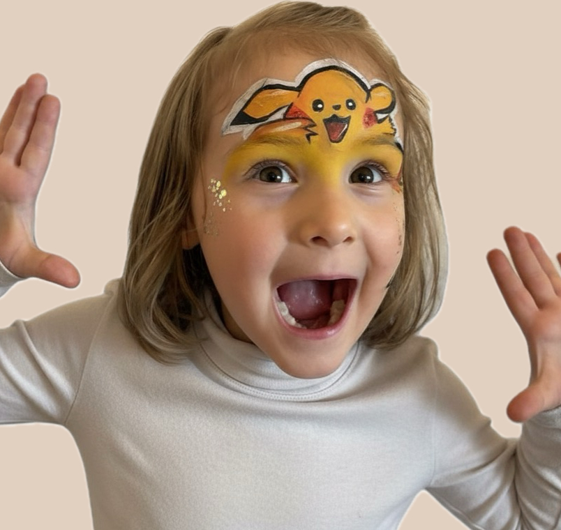
Pikachu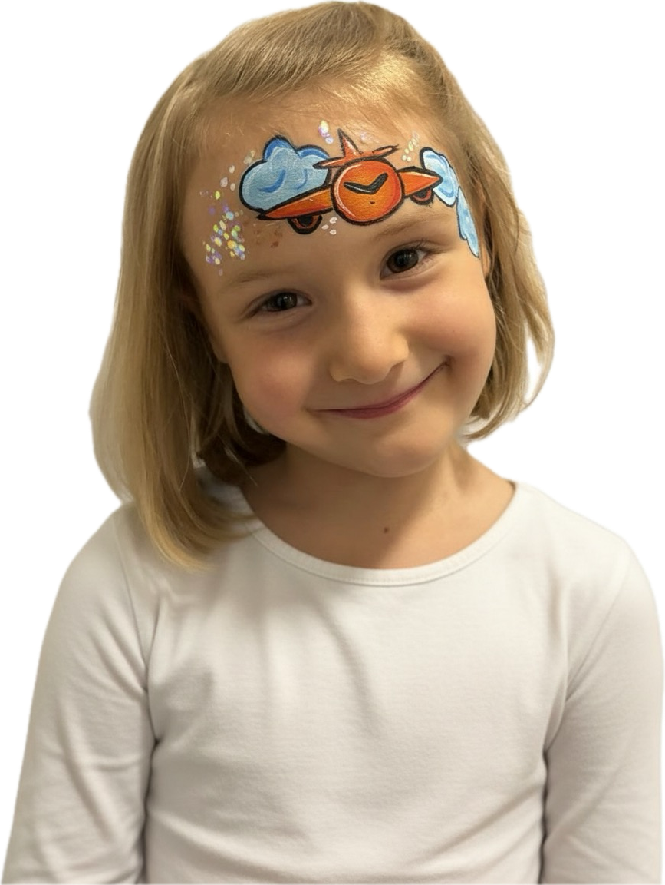
Flugzeug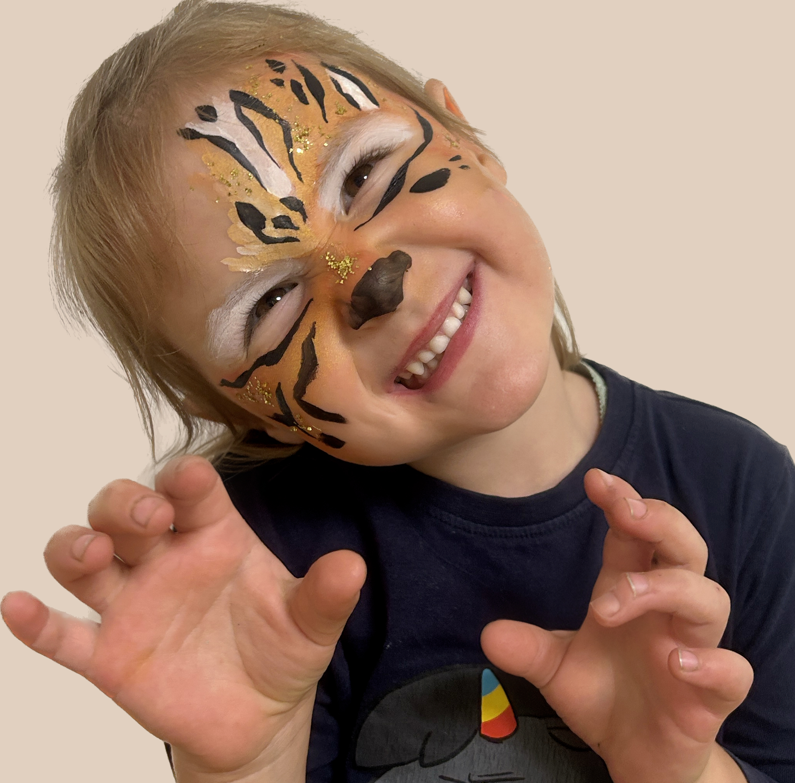
Tiger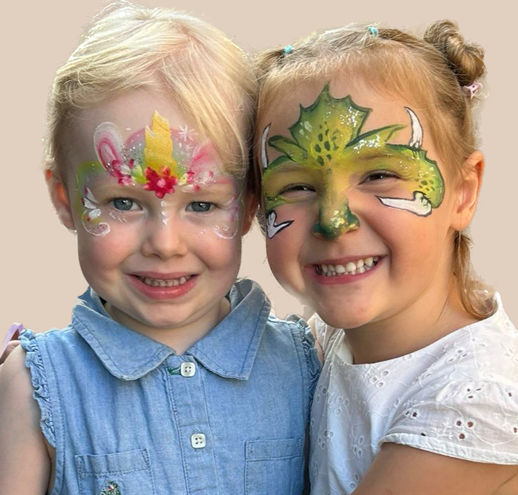
Einhorn & DrachenProfessionelles Kinderschminken in Zürich
Jedes Motiv ist ein Unikat — und genau so soll sich jedes Kind fühlen: Einzigartig!
Ob Prinzessin, Tiger, Schmetterling oder Drachen — ich male jedes Gesicht mit Sorgfalt und Hingabe, damit die Augen strahlen. Als mobile Kinderschmink-Künstlerin komme ich direkt zu euch nach Zürich, Dübendorf und Umgebung.
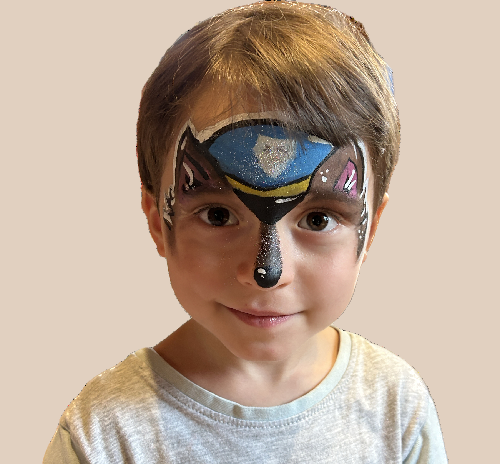
Wolf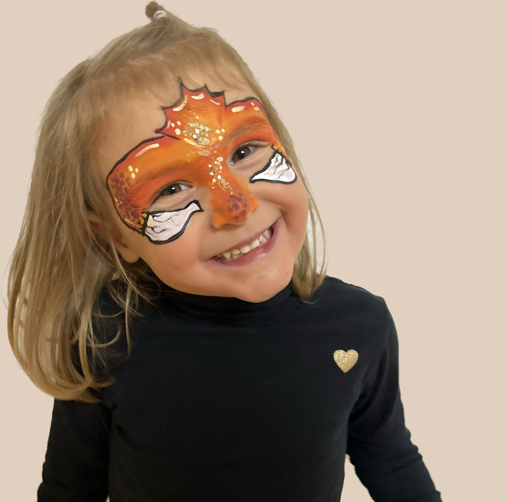
Drachen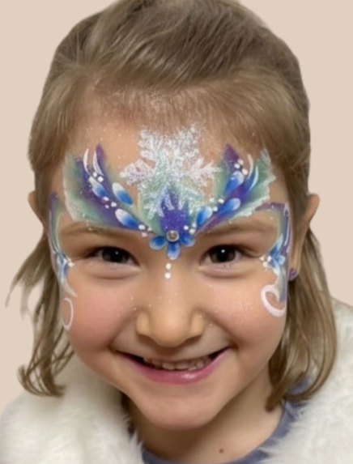
EisköniginKinderschminken für Geburtstage & Partys in Zürich
Egal ob mit oder ohne Thema — dadurch, dass ich alle Motive selbst male, kann ich mich ganz nach euren Wünschen richten. So fügen sich die Bilder wunderbar in das Event ein.
 Für alle
Für alle
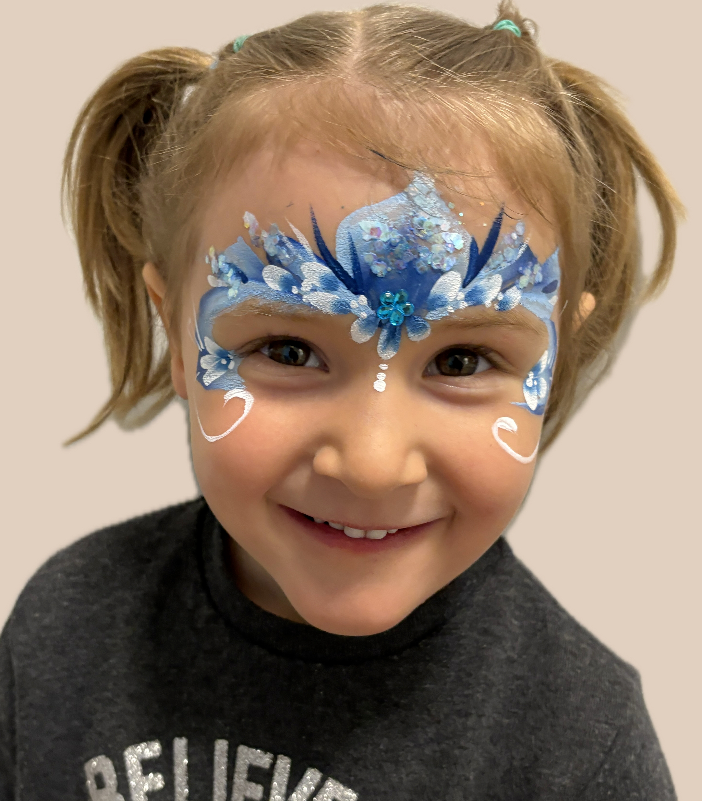
Blaue Blumen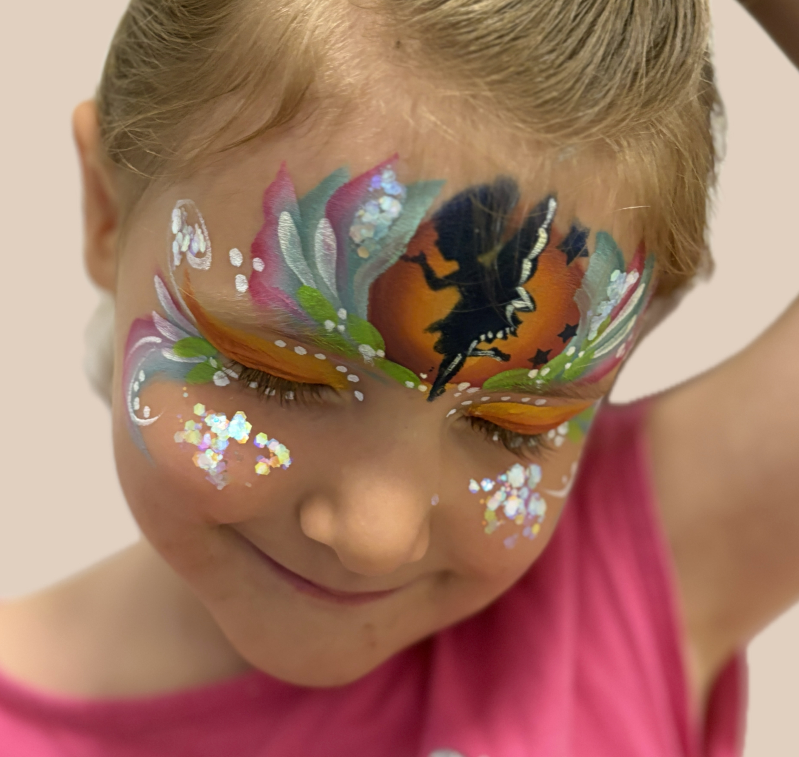
FeeKinderschminken für grosse Gruppen & Events
Grösseres Event geplant? Sprecht mich einfach an und wir können gemeinsam besprechen, ob es Sinn macht, dass ich Verstärkung zum Kinderschminken mitbringe.
Mehr Details dazu gerne auf Anfrage.
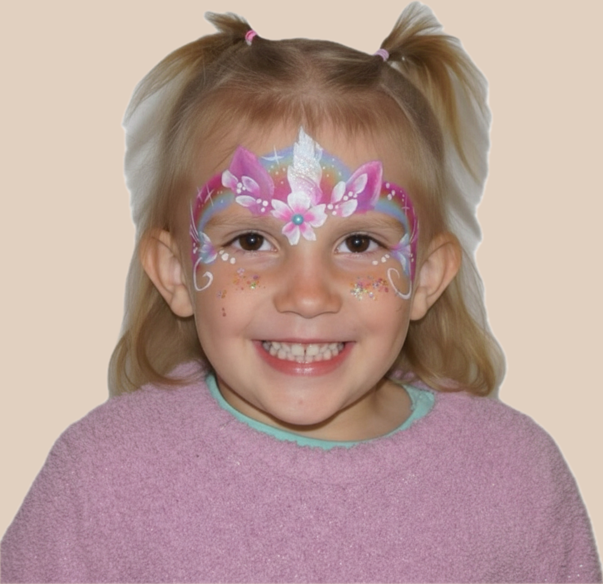
Einhorn Krone Schmetterling
Schmetterling
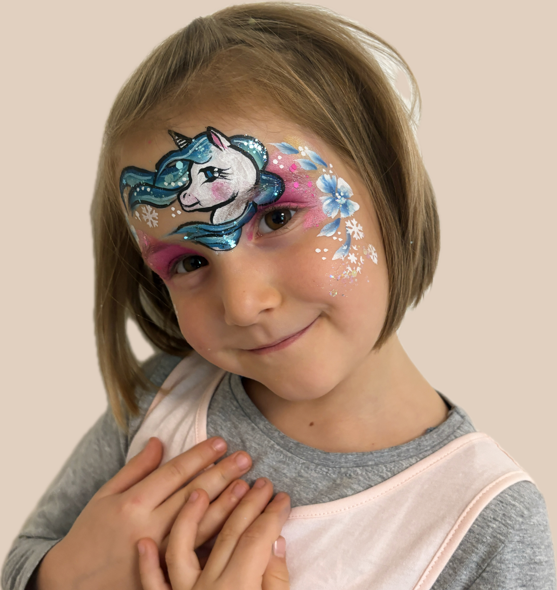
EinhornFür jedes Kind das perfekte Motiv
Von der zarten Einhorn-Krone bis zum funkelnden Schmetterling — für jedes Kind findet sich das Motiv, das seine Augen zum Leuchten bringt.
Kinderschminken Preise — Zürich & Dübendorf
Faire Preise für unvergessliche Momente.
+ CHF 1/km Anfahrtskosten
ab 8600 Dübendorf / Zürich
So einfach geht's
-
1
Melde dich bei mir
Schreib mir eine Mail oder ruf an und nenn mir Datum, Thema, Ort und die Anzahl der Gäste oder Kinder.
-
2
Unverbindliches Angebot
Du erhältst innerhalb von 24h ein unverbindliches Angebot mit Preis und allen Details.
-
3
Klärung der Details
Nach deiner Unterschrift besprechen wir alle Details in einem kurzen (Video-)Call.
-
4
Motive vorab (optional)
Wenn du möchtest, sende ich dir gerne vorab eine Auswahl an möglichen Motiven.
Alles dabei — sofort einsatzbereit
Ich habe bereits alles im Gepäck dabei, was ich vor Ort benötige. Nach einem kleinen Aufbau (Tisch, Stuhl und Materialien) kann es schon losgehen — ob in Zürich, Dübendorf oder der ganzen Umgebung!
Durch das kleine aber professionelle Set-up gewährleiste ich absolute Flexibilität zu allen Gegebenheiten. Auch ein Umzug während der Feier (beispielsweise bei schlechter Witterung) ist gar kein Problem.
Vegan & Unbedenklich
Verwendet werden ausschliesslich hochwertige Farben, die absolut unbedenklich sind — und vegan! Es sind weder tierische Produkte darin enthalten, noch wurden die eingesetzten Produkte an Tieren getestet.
Das spricht für uns
-
Strahlende Kinderaugen
Kinder lieben es, sich schminken zu lassen! Das Lächeln ist der schönste Lohn.
-
Erinnerungen mit Wow-Effekt
Ins Thema und Farbschema passend — damit die Fotos noch Jahre später strahlen.
-
Geringer Aufwand
Nur ein kleiner Tisch und ein Stuhl — ich passe mich ganz flexibel den Gegebenheiten an.
-
Wetterunabhängig
Hauptsache trocken. Umzug auch während des Events gar kein Problem.
-
Publikumsmagnet
Das Kinderschminken fasziniert alle Altersklassen — Gross und Klein.
Alles zum Kinderschminken in Zürich
FAQ
Je nach Motiv 5–10 Minuten. Einfachere Designs wie Blumen oder ein Flugzeug sind schneller fertig; aufwendigere Motive wie Einhorn, Tiger oder Drachen brauchen etwas länger. Bei der Buchung planen wir gemeinsam, wie viel Zeit für eure Gästeanzahl sinnvoll ist.
Ja — ich verwende ausschliesslich zertifizierte, dermatologisch getestete Schminkfarben, die speziell für die empfindliche Kinderhaut entwickelt wurden. Sie sind wasserlöslich und lassen sich einfach wieder abwaschen.
In der Regel ab ca. 3 Jahren. Bei jüngeren Kindern entscheide ich gemeinsam mit den Eltern vor Ort — manche Zweijährigen sitzen still und begeistert, andere brauchen noch etwas mehr Zeit. Ich gehe immer einfühlsam auf jedes Kind ein.
Ich komme zu euch in ganz Zürich und Umgebung — Dübendorf, Kloten, Uster, Winterthur, Rapperswil und weitere Orte. Bei grösserer Distanz einfach anfragen, ich finde gerne eine Lösung.
Nur einen kleinen Tisch (ca. 60 × 80 cm) und einen Stuhl für die Kinder — alles andere bringe ich selbst mit. Ich bin in rund 10 Minuten aufgebaut und sofort einsatzbereit.
Ich empfehle mindestens 2–4 Wochen im Voraus, besonders für Wochenendtermine. Kurzfristige Anfragen nehme ich gerne entgegen — falls ich noch verfügbar bin, klappt es auch spontan.
Jetzt euer Event unvergesslich machen
Termin noch frei für euer Datum — jetzt unverbindlich anfragen, Antwort innerhalb von 24h.